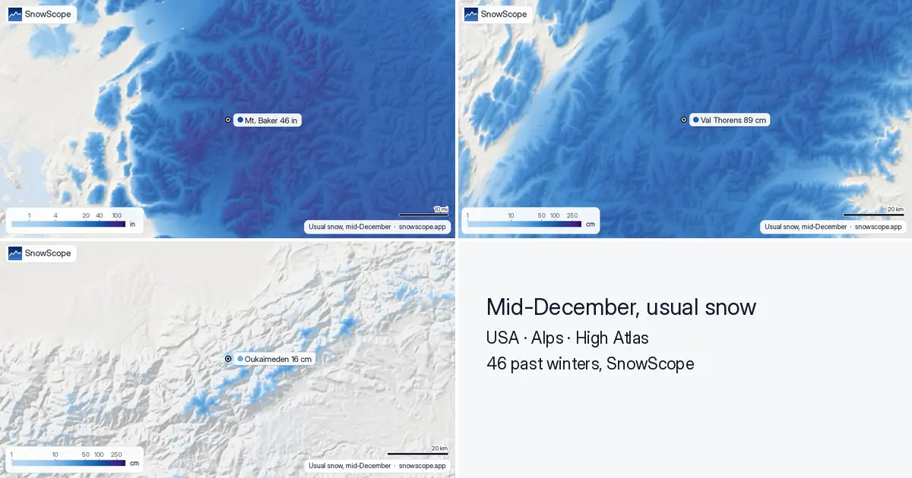

Austria snow report today: snow depth and new snow, 17 November 2026
In Austria, about 15,400 km² of high ground is white today, 4,150 km² less than yesterday. Roughly 30 % of the country's mapped mountains and hills are covered.
See the live snow forecast for Kühtai in the SnowScope appSnow depth, powder alerts and the 3D map, free.
Today's snow cover
Below about 1,700 m the slopes are mostly green or brown. Over the week the white area has hardly moved from 15,260 km².
| Resort | Snow depth | New snow, 72 h | Coming, next days | Top |
|---|---|---|---|---|
| Kühtai | 54 cm | 9 cm | 15 cm | 2,507 m |
| Stubaier Gletscher | 51 cm | 7 cm | 13 cm | 3,208 m |
| Kaprun | 49 cm | 5 cm | 11 cm | 3,024 m |
| Bergeralm | 49 cm | 4 cm | 9 cm | 2,175 m |
| Hochoetz-Kühtai | 44 cm | 9 cm | 15 cm | 2,507 m |

Snow depth by height
Snow depth on the ground, height by height: between 500 and 1,000 m, under 1 cm on average, 2 % covered; between 1,000 and 1,500 m, under 1 cm on average, 12 % covered; between 1,500 and 2,000 m, 2 cm on average, 56 % covered; between 2,000 and 2,500 m, 12 cm on average, 98 % covered; above 2,500 m: on average 24 cm (100 % white).
Skiing conditions
The snow is retreating uphill, so plan on the higher lifts and avoid the low valley runs.
Keep an eye on the forecast: the coming snow could change the picture quickly.
New snow in the last three days
Three-day totals peak at 8 cm, around Vorarlberg, Tyrol and the Ötztal Alps.
In the past day, up to 5 cm was added.
At least 5 cm fell over some 3,370 km².
The next days
The week ahead could bring up to 47 cm, 23 cm of it in the next three days.
The snowiest day looks like Saturday 21 November, with up to 15 cm in the snowiest spots.
The second week adds up to 16 cm where it snows most.
Shortlist for the weekend
Kühtai leads with 54 cm on its upper slopes.
Next on the list: Stubaier Gletscher (51 cm), Kaprun (49 cm), Bergeralm (49 cm) and Hochoetz-Kühtai (44 cm).
Kühtai picked up 9 cm in the last three days and could add 15 cm by Friday 20 November.
Stubaier Gletscher picked up 7 cm in the last three days and could add 13 cm by Friday 20 November.
Snow lies on the upper slopes of 225 out of 279 resorts in Austria.
Tips for skiers
- Read the local avalanche bulletin before going off-piste.
- Fresh snow on a cold base sticks badly: take care on steep slopes.
- Early-season snow is thin over rocks: ski the groomed runs first.
About these numbers
Resort snow depths are the deepest snow on the resort's upper slopes from the SnowScope snow model (about 1 km, run of 17 November); they are estimates for an area, not a measurement at one point. Station values are measurements on the date shown. Forecasts can change. Always read the official avalanche bulletin before going off-piste.
Cite this report
For research, teaching or the press: the numbers and charts are free to reuse under CC BY 4.0 with this citation.
SnowScope (2026), Austria snow report today: snow depth and new snow, 17 November 2026, https://snowscope.app/blog/en/2026/11/austria-snow-report-17-november-2026.html, accessed 2026-11-17
SnowScope (Atlas Labs). (2026, November 17). Austria snow report today: snow depth and new snow, 17 November 2026. SnowScope snow reports. https://snowscope.app/blog/en/2026/11/austria-snow-report-17-november-2026.html
BibTeX
@misc{snowscope2026austriasnowreport17novem,
author = {{SnowScope (Atlas Labs)}},
title = {Austria snow report today: snow depth and new snow, 17 November 2026},
year = {2026},
month = nov,
howpublished = {\url{https://snowscope.app/blog/en/2026/11/austria-snow-report-17-november-2026.html}},
note = {Published 2026-11-17 12:53 UTC; accessed 2026-11-17}
}· CC BY 4.0 · Methods, data and tools →
Kühtai: snow and temperature by height, this winter vs last (tools) →
Follow Kühtai
Free: a message when fresh snow is coming, and the forecast every morning.
More snow reports

We compared the snow on 10 November with each winter's deepest snow at 46 ski resorts over 46 winters. A snowy start helps, but less than many skiers think.

One picture, 100 mountain ranges in the Alps, the Pyrenees, the Atlas and North America: Canada leads with 89% snow cover, the Alps reach 45%, the Atlas and the US Northeast are still bare.

December snow odds from 46 winters and checked day prices: Ski Cooper $49, Les 3 Vallées €75.70, Oukaïmeden no official tariff. Where a cheap December ski day works.